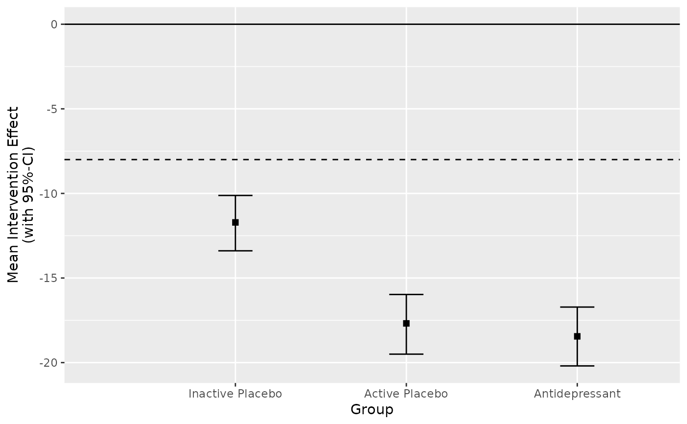
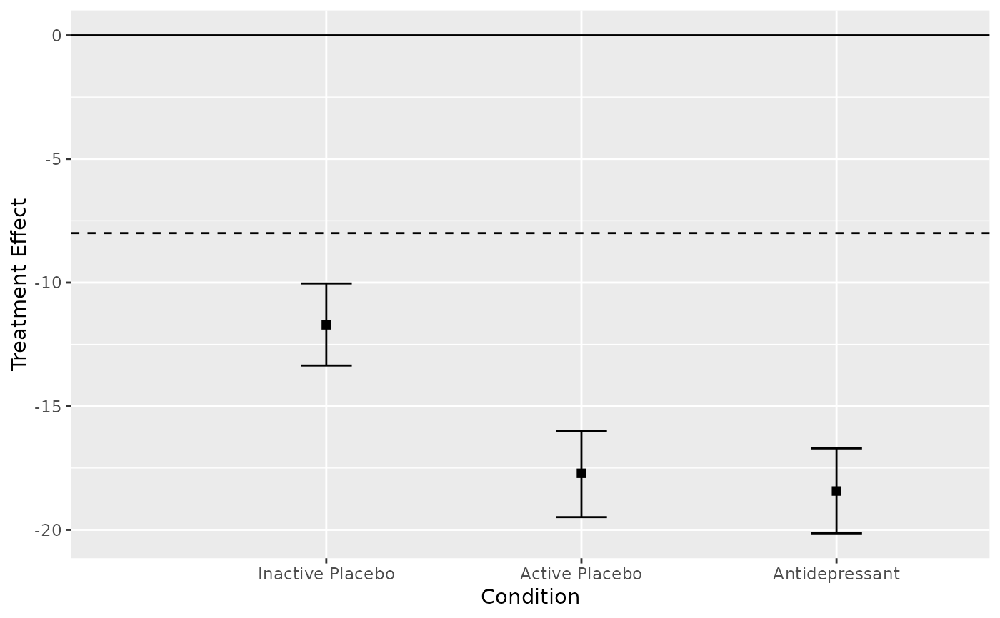

This function creates a generic group level clinical significance plot by plotting the between group change with the associated uncertainty interval around the estimated change on the y-axis.
Usage
# S3 method for class 'cs_anchor_group_between'
plot(
x,
x_lab = "Group",
y_lab = "Mean Intervention Effect\n(with 95%-CI)",
...
)Examples
cs_results <- antidepressants |>
cs_anchor(
patient,
measurement,
mom_di,
mid_improvement = 8,
target = "group",
group = condition,
effect = "between",
post = "After"
)
# Plot the results "as is"
plot(cs_results)

# Change the axis labels
plot(cs_results, x_lab = "Condition", y_lab = "Treatment Effect")
